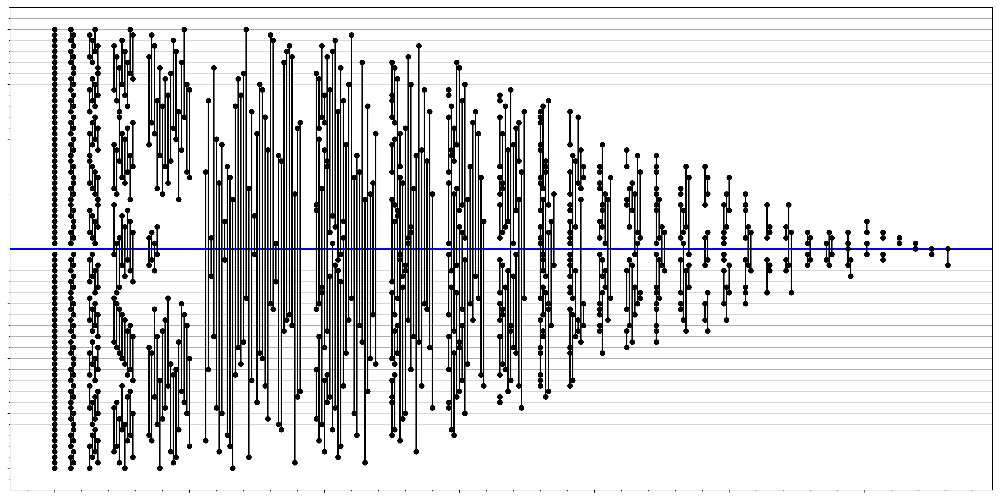

Inspired by Median Sorting Networks <= 64.
Occasionally in FPGA design fast parallel median calculations are desired. Large modern FPGAs allow these algorithms to be implemented allowing for fast median calculations Optimizing a large median filter to utilize as few comparisons as possible allows for smaller footprints and faster clocks.
One options is to split a median data set into 2 half size sorts and then use a final 40 pair comparison to calculate the median.
Below is my work inspired by bertdobbelaere. I implemented a greedy network finder and the best results so far are listed below.
I will post the greedy algorithm when I generalize for 64 < m < 129
| Number of inputs | (Size,Depth) Combinations | Comments |
|---|---|---|
| 81 | (498,30) | Greedy |
| 81 Inputs, 498 CEs, 30 layers
Place network here |
 |